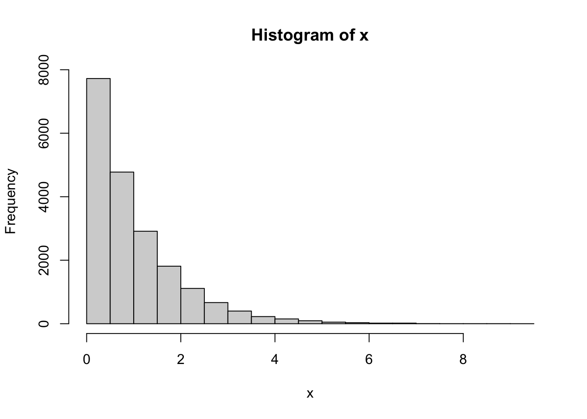
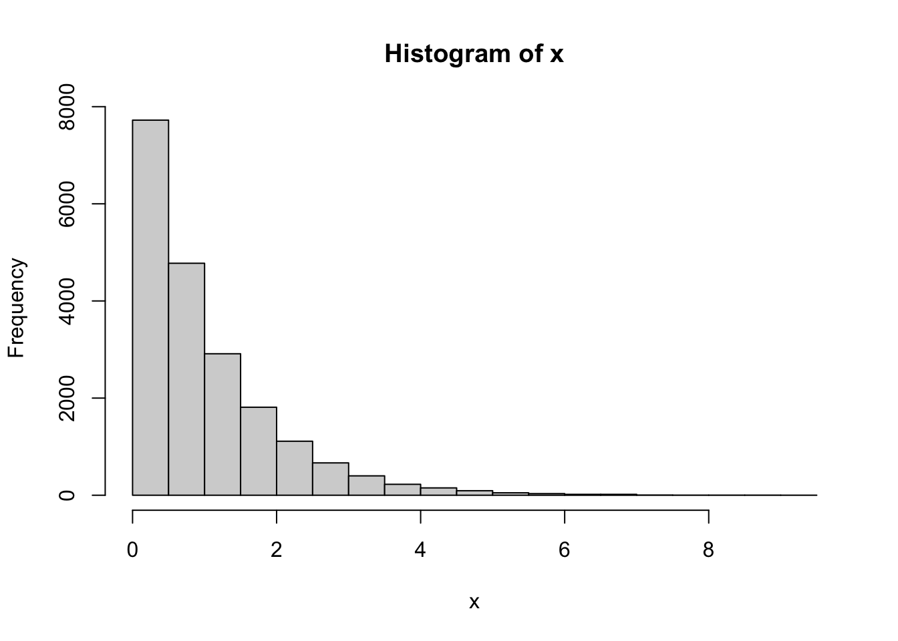
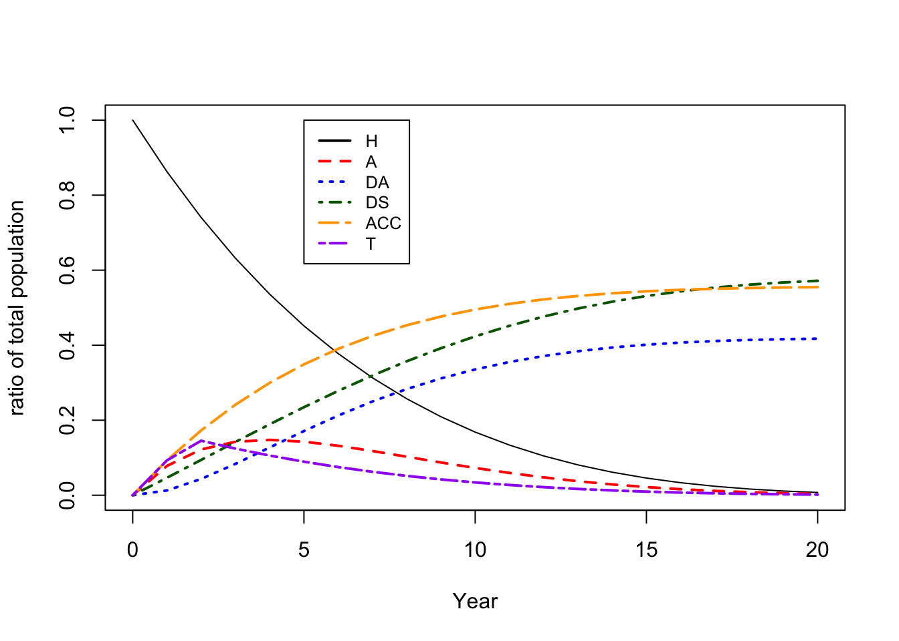
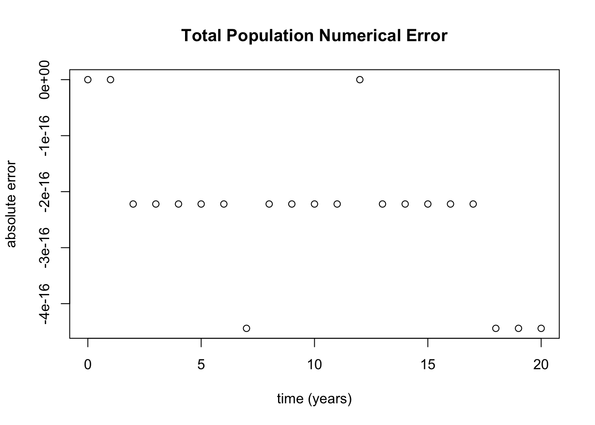

x <- rexp(20000)
hist(x)
mean(x)[1] 1.011341median(x)[1] 0.7090352# Percentage in first time cycle
sum(x < 1) / length(x)[1] 0.62495
Comparison of Decision Modeling Approaches for Health Technology and Policy Evaluation
This section provides advice on best practices for embedding literature-based parameters into discrete-time Markov models so that the final transition probabilities accurately represent the underlying continuous time process.
It is common to draw upon literature-based parameters when constructing a Markov model. A key first step is to assess the parameters of interest in a published study. For a given paper with published rates, thsi means determining whether they report a percentrage affected in a given time step, or continuous rates. While the units of both of these are essentially equivalent (by a factor of 100), the interpretation is different. It is a subtle but important difference.
For example, let’s assume that a stochastic event occurs to a group of individuals with a rate of 1/unit time. This follows an exponential distribution. We first create a sample of 20000 individuals.
x <- rexp(20000)
hist(x)
mean(x)[1] 1.011341median(x)[1] 0.7090352# Percentage in first time cycle
sum(x < 1) / length(x)[1] 0.62495The mean is close to 1, but the percentage observed in the first time cycle is close to the theoretical 63.2%. This appears counter-intuitive but the long tail of the exponential distribution creates a situation where the continuous rate is not the observed percentage in a time cycle.
This leads to the widely-used rate-to-probability conversion formula:
\[p = 1 - e^{-r}\] \[r = -log(1-p)\] where \(p\) represents the probability in a unit of time and \(r\) represents the continuous rate.
When constructing a Markov model, it is best to start with the continuous rate when aggregating from many sources and embed this continuous rate into a timestep—thus creating probability transitions for each time step.
To find the probability transition matrix of a timestep in Markov modeling from the continuous the following formula is used:
\[ T_{prob} = e^{R} \]
Where \(R\) is the continuous rate matrix, and each diagonal is the negative sum of the rest of the row elements. \(T_{prob}\) is the transition probability for a single time step, where each diagonal is 1 - the sum of the other row elements.
One could have rates that change at each time step and this would return the proper embedding of the rates allowing for them to compete.
What if a given source of data provides observed transition probabilities and these are exclusionary states, i.e., competing? How could one reverse these probabilities and embed other competing events into the model?
To do this, one must solve for the generator matrix of the transition probability matrix using eigenvalue decomposition. Note that this is not always possible, as it is trivial to construct a transition probability matrix that has no generator.
Consider the following, which builds on the example provided in the main text. We wish to approximate a continuous time process using a discrete-time Markov model with three distinct states: A (healthy), B (sick/intervention), and C (complication from intervention). Moreover, in continuous time, this process proceeds sequentially, i.e., A->B->C.
A (naively) specified model has transitions from A->B and from B->C specified as probabilities within the selected time step. As noted in the main text, this model cannot truly approximate continuous time process, as within a given time step there is a non-zero probability of transitioning from healthy to complication (i.e., A->C, with an implied sojourn through B). That is, during a timestep it is possible to transition from A->C.
By incorrectly specifying all transitions, it makes it impossible to find a proper generator—though eigenvalue decomposition can be used to get as close as possible. If negative rates of transition are found using eigenvalue decomposition, then probabilities inconsistent with continuous rates have been specified.
In mathematical terms, the generator matrix is the matrix logarithm of the transition probability matrix. A matrix has a logarithm if and only if if it is invertible.
\[ A = \log T_{prob} \]
The \(\log\) can be found using spectral or eigenvalue decomposition. If \(V\) is a matrix where equal column is an eigenvector of \(T_{prob}\), then,
\[A' = V^{-1} A V\] \[\log T_{prob} = V (\log A') V^{-1}\]
As an example, we’ll consider a model from “Decision Modelling for Heath Economic Evaluation” by Briggs, Clatxon, and Sculpher. In Table 2.2, they define a transition probability matrix for HIV monotherapy that was derived from observed percent transitions in a patient cohort.
hiv_monotherapy_tp <- matrix(c(0.721, 0.202, 0.067, 0.010,
0.000, 0.581, 0.407, 0.012,
0.000, 0.000, 0.750, 0.250,
0.000, 0.000, 0.000, 1.000),
nrow=4, byrow=TRUE,
dimnames=list(c("A", "B", "C", "D"),
c("A", "B", "C", "D")))
hiv_monotherapy_tp A B C D
A 0.721 0.202 0.067 0.010
B 0.000 0.581 0.407 0.012
C 0.000 0.000 0.750 0.250
D 0.000 0.000 0.000 1.000The bottom diagonal was corrected to be a Markov absorbing state by having 1 on the diagonal. For the purposes of example, we’ll assume we wish to add an additional state “E”, which has a continuous rate of 0.2 that competes with other transitions.
To accomplish this we must find the continuous generator.
V <- eigen(hiv_monotherapy_tp)$vectors
iV <- solve(V)
Ap <- iV %*% hiv_monotherapy_tp %*% V
Ap [,1] [,2] [,3] [,4]
[1,] 1.000000e+00 -1.138759e-17 0.000000e+00 1.625347e-17
[2,] 1.724225e-16 7.500000e-01 0.000000e+00 -1.565421e-16
[3,] -1.054209e-15 -1.977467e-16 7.210000e-01 3.654408e-17
[4,] -6.257371e-17 -1.879313e-17 -5.963692e-18 5.810000e-01Due to the numeric probabilities not being exactly correct, the off-diagonal elements of \(A'\) are not zero, but they are quite close. We will zero these off diagonal elements and assume that the non-zero elements are numerical error. Then continue by taking the log of the diagonal.
lAp <- diag(log(diag(Ap)), nrow(Ap), ncol(Ap))
R <- V %*% lAp %*% iV
R [,1] [,2] [,3] [,4]
[1,] -3.271161e-01 3.114961e-01 0.002439536 0.01318051
[2,] 2.558460e-18 -5.430045e-01 0.614888976 -0.07188445
[3,] 0.000000e+00 7.064112e-18 -0.287682072 0.28768207
[4,] 0.000000e+00 0.000000e+00 0.000000000 0.00000000An now we have the continuous time rate generator for the Markov Model. There is still some numerical error—for example the bottom row, has values very near to zero, and the diagonal is not exactly the negative sum of the rest of the row. We can clean this up by tweaking the numbers numerical towards their constraints.
R[abs(R) < 1e-6 ] <- 0
rownames(R) <- c("A", "B", "C", "D")
colnames(R) <- c("A", "B", "C", "D")
round(R, 3) A B C D
A -0.327 0.311 0.002 0.013
B 0.000 -0.543 0.615 -0.072
C 0.000 0.000 -0.288 0.288
D 0.000 0.000 0.000 0.000Some numerical error is inevitable in this process and cannot be avoided. However, even cleaning up the small and obvious errors, the transition from B -> D is impossible since it’s negative. Rates are relative to the occupancy of the source state, in this case B. Having a negative rate implies that B would have some transitions in which the dead come alive into B based upon the occupancy of B. Obviously, this is not possible. The problem now is how to adjust the model’s rates to be physically possible, while as faithful to the original data as possible. B is a sicker state, so it should have a higher death rate.
First, let’s double check it recapitulates the original rates.
expm(R)4 x 4 Matrix of class "dgeMatrix"
A B C D
A 0.721 0.202 0.067 0.010
B 0.000 0.581 0.407 0.012
C 0.000 0.000 0.750 0.250
D 0.000 0.000 0.000 1.000Which exactly matches the original transition probability table given.
Next, lets’ assume that one has to pass into state C to die and the original data didn’t have frequent enough measurements to detect all the transitions.
# A more plausible death rate for 'A', 'B'
R['A', 'D'] <- 0
R['B', 'D'] <- 0
diag(R) <- diag(R) - rowSums(R) # Keep it Markovian
round(expm(R), 3)4 x 4 Matrix of class "dgeMatrix"
A B C D
A 0.731 0.197 0.066 0.007
B 0.000 0.541 0.393 0.066
C 0.000 0.000 0.750 0.250
D 0.000 0.000 0.000 1.000The rate from A->D is within error of the original study. However, deaths from B are at a much higher rate. This is all under the assumption that one must pass through C to die, and the adjusted transitions reflect this.
Now one could add a competing event to to the model as a rate adding a new row column with it’s defined rates and compute the updated transition probability matrix.
These difficulties of working backward from probabilities unscore the importance of having the original estimates be rates that have been adjusted to be the non-competing rate (e.g., based on survival models).
The above examples also illustrate another difficulty: correctly summarizing costs and utilities in the presence of implied “jumpover” states. For example, we zeroed the rate of A->D, yet the final transition matrix contains that transition.
Assume that the transition B->C entailed a cost, given that some of the population goes A->B->C->D these transitions are hidden in the embedded transition matrix, yet a summary of the number of B->C transitions is needed for a time step. One can solve this by adding non-Markovian states or accumulator states to track these transitions.
The diagonal term of the transition intensity matrix is the negative sum of all Markovian states. Additional rows and columns can be added that violate the principal that total state occupancy cannot be created or destroyed, by simply leaving them out of the balancing term of the diagonal.
RwAcc <- cbind(rbind(R, rep(0, 4)), rep(0, 5))
rownames(RwAcc) <- c("A", "B", "C", "D", "AccBC")
colnames(RwAcc) <- c("A", "B", "C", "D", "AccBC")
RwAcc['B', 'AccBC'] <- RwAcc['B', 'C']
round(expm(RwAcc), 3)5 x 5 Matrix of class "dgeMatrix"
A B C D AccBC
A 0.731 0.197 0.066 0.007 0.071
B 0.000 0.541 0.393 0.066 0.459
C 0.000 0.000 0.750 0.250 0.000
D 0.000 0.000 0.000 1.000 0.000
AccBC 0.000 0.000 0.000 0.000 1.000Note that once embedded into probabilities, there is a transition from A->AccBC which tracks how many transitions from A->B->C and B->C occur. The original rate specified was zero for A->AccBC, but due to jumping states this now has a non-zero probability and the accumulator is able to track this.
Idealy the original rate estimates would have assumed a structural model that was sensible and rates could be estimated to match the data. This is a statistical modeling problem outside the scope of this appendix.
For the sake of organization, it is recommended that the upper left matrix remain the original Markov and all the non-Markovian rows be to the bottom and right of the matrix.
Another problem that occurs is that of non-stationary rates. What if a rate is changing over an interval time step? How is this best modeled? A first order approach would be to simply take the mean of the rates at either time point. A higher order approach is to integrate the total risk exposure over the time interval.
\[r_{e} = \int_{t_1}^{t_2} r(t) dt\] This computes the effective rate \(r_e\) from a time varying rate, \(r(t)\).
For example, in our applications the probability of death from outside causes could be modeled based on mortality tables using a Gompertz distribution with a shape \(a\) and rate \(b\) parameter. The hazard function of a distribution is the continuous rate function. The hazard function can be derived from the probability density function (PDF) divided by 1 minus cumulative probability function (CDF). For the Gompertz this is,
\[h(t) = \frac{f(t)}{1-F(t)} = \frac{b e^{at} e^{-b/a(e^{at}-1)}}{e^{-b/a (e^{at}-1)}} = b e^{at}\]
From this the effective rate over a timestep of a discrete Markov simulation can be computed.
\[r_{e} = \int_{t_1}^{t_2} b e^{at} dt = \frac{b}{a} (e^{at_2} - e^{at_1})\]
While this exists as an anayltical result, in general it’s better to use the effective risk over a time interval as this leads to improved accuracy of a simulation.
Tunnel states by definition are non-Markovian. However, they cannot be treated as accumulators, i.e., defined before exponentiation. This is due to their rates being infinite. This requires that the transition matrix be modified directly after computation. Enter the rates as zero, then modify post matrix exponentiation. A full example is below in the section `Bringing it All Together’
It may be tempting to simply rescale the time scale to improve the accuracy of the Markov simulation (i.e., use a daily time step rather than monthly or yearly, as this reduces the likelihood that multiple competing events occur within a time step). While this is true in principle, without using the tools above for embedding rates it leads to higher numerical error and has the opposite of the intended effect. To rescale this is done at the matrix exponentiation stage of the matrix.
\[ T_{p} = e^{R t} \]
Where \(t\) is the new time scaling factor. For example, if the rate matrix \(R\) is in units of events per year and a monthly simulation is desired, \(t=\frac{1}{12}\), thus Monthly \(T_p = e^{R/12}\).
Another commonly-used method to improve accuracy when adding cost or utility over a simulation result is that of the half-cycle correction or the life table method. We recommend against using these corrections, as they are simply Newton’s trapezoidal method for integrating evenly spaced points.
The current state of the art in this area is the alternate extended Simpson’s rule which estimate higher order terms of rate of change of the function. In most health economic applications the overall change in curvature is acceptably smooth and this technique returns accurate results.
The alternate extended Simpson’s rule to integrate a curve is as follows:
\[ \int^b_a x(t) dt \approx \frac{h}{48}\left[ 17 x_0 + 59 x_1 + 43 x_2 + 49 x_3 + \sum_{i=4}^{n-4} x_i 49x_{n-3} + 43x_{n-2}+59x_{n-1}+17x_n \right] \]
Where \(a\) and \(b\) represent the time window of the simulation, \(x(t)\) is the theoretical function that is being summed, \(h\) is the width of the time step, and \(x_i\) is the simulation result at time point \(i\).
This method requires at least 8 time points. If one’s simulation is shorter, there are shorter versions of Simpson’s rules with fewer higher order terms.
In general with accurate time step embedding of rates and Simpson’s rules, rescaling is not required. If one does rescaling, compare the existing time points from the bigger timestep to the smaller—they should line up exactly. If they don’t line up, then rescaling is not being done properly.
We conclude with a simple example that brings all of these techniques together.
We will assume there exists a state “H” healthy, A condition “A” and death from “A” and death from outside causes. An individual of our target population develops “A” at a rate of 0.1. Individuals with “A” die at a rate of 0.3. Secular death can occur from “H” or “A” with Gompertz distribution with a shape \(a=0.1\) and rate \(b=1/1200\). “A” incurs a one time cost of $1000. Existing in state “A” has a disutilty of 0.2 for 2 years. We wish to simulate a 20-year time horizon.
SD <- (H -> A) -> AD
First we define our effective death rate function for a given time step using the Gompertz hazard integration above.
rate_secular_death_by_age <- function(t, h=1, a=0.1, b=1/1200)
{
(b/a) * (exp(a*t) - exp(a*(t-h)))
}Next we define our Markovian embeddable rate transition matrix.
markov_rate_matrices<- function(t, h=1)
{
lapply(t, function(tt){
r.secular <- rate_secular_death_by_age(tt+40, h)
x <- matrix(c(0.0, 0.1, 0.0, r.secular,
0.0, 0.0, 0.3, r.secular,
0.0, 0.0, 0.0, 0.0,
0.0, 0.0, 0.0, 0.0),
nrow=4,
ncol=4,
byrow=TRUE,
dimnames=list(c("H", "A", "DA", "DS"),
c("H", "A", "DA", "DS")))
diag(x) <- -rowSums(x)
x
})
}We modify the matrix to include an accumluator ‘ACC’ for death from A ‘DA’ entry. Technically this wouldn’t be required as ‘DA’ is an absorbing state, but for the purposes of example it is included.
We will also create a T1 and T2 state for tracking tunnels and allow exit from due to external death. This requires us to have a recieving bucket for these external risks ‘N’ for NULL so as not to disturb the balance of the Markov.
non_markov_rate_matrices <- function(t, h=1)
{
markov <- markov_rate_matrices(t, h)
non_markov <- list()
for(i in t)
{
# Expand matrix
non_markov[[i]] <- cbind(markov[[i]], matrix(rep(0, 16), nrow=4))
non_markov[[i]] <- rbind(non_markov[[i]], matrix(rep(0, 32), nrow=4))
}
lapply(non_markov, function(m){
# Put in State Names
rownames(m) <- c("H", "A", "DA" ,"DS", "ACC", "T1", "T2", "N")
colnames(m) <- c("H", "A", "DA" ,"DS", "ACC", "T1", "T2", "N")
# Define Accumulator
m["H", "ACC"] <- m["H", "A"]
# Define Tunnel state entry
m["H", "T1"] <- m["H", "A"]
m # Note: Tunnel states are not fully defined at this point.
})
}Next we embed the non-Markovian matrices into the time step and finish the definition of the tunnel states in the probability space.
transition_prob <- function(t, h=1)
{
# Embed the matrices into the timesteps
tp <- lapply(non_markov_rate_matrices(t, h), function(m) expm(m*h))
lapply(tp, function(m)
{
# It is possible to exit tunnel to external risk of death
m["T1", "N"] <- m["A", "DA"] + m["A", "DS"]
m["T1", "T1"] <- 0 # Cannot remain in tunnel
m["T1", "T2"] <- 1-m["T1", "N"] # The tunnel is everything else
# T2 is terminal state
m["T2", "T2"] <- 0
m["T2", "N"] <- 1
# Note: At this point, the "N" state could be stripped as it was
# only required for the embedding, and serves no other purpose
# at this point
states <- c("H", "A", "DA", "DS", "ACC", "T1" ,"T2")
m[states, states]
})
}Now the simulation matrices are fully defined at each timestep, and it can be run versus a starting population.
Y <- t(c(H=1, A=0, DA=0, DS=0, ACC=0, T1=0, T2=0))
simulation <- do.call(rbind, lapply(transition_prob(1:20), function(tp) {
Y <<- Y %*% tp
}))
simulation <- rbind(
c(H=1, A=0, DA=0, DS=0, ACC=0, T1=0, T2=0),
simulation
)Let’s plot the trajectories of the simulation.
plot(0:20, simulation[,"H"], ylim=c(0,1), typ="l", ylab="ratio of total population", xlab="Year")
lines(0:20, simulation[,"A"], col="red", lty=2, lwd=2)
lines(0:20, simulation[,"DA"], col="blue", lty=3, lwd=2)
lines(0:20, simulation[,"DS"], col="darkgreen", lty=4, lwd=2)
lines(0:20, simulation[,"ACC"], col="orange", lty=5, lwd=2)
lines(0:20, rowSums(simulation[,c("T1", "T2")]), col="purple", lty=6, lwd=2)
legend(5, 1.0, c("H", "A", "DA", "DS", "ACC", "T"), lty=1:6,
col=c("black", "red", "blue", "darkgreen", "orange", "purple"), cex=0.8, lwd=2)
A good check at this point is to see if the simulation kept the total population consistent, i.e., neither created nor destroyed occupants of the Markov simulation. If the plot strays far from zero, then something is wrong in constructing the model.
plot(0:20, 1-rowSums(simulation[,c("H", "A", "DA", "DS")]), xlab="time (years)",
ylab="absolute error", main="Total Population Numerical Error")
Now with the simulation complete and passing a simple check, one can proceed to integrate costs and qualities.
First let’s define the alternate Simpson’s coefficient function for integration.
# Better accuracy that "life-table" aka trapezoidal method
alt_simp_coef <- function(i) c(17, 59, 43, 49, rep(48, i-8), 49, 43, 59, 17) / 48
alt_simp <- function(x,h) h*sum(alt_simp_coef(length(x)) * x)1000*simulation[21,"ACC"] # The last point is the total ACC
554.7587 Total possible life years:
alt_simp(rowSums(simulation[,c("H", "A")]), 1)[1] 6.943292Total Disutility of ‘A’ (via the tunnel states):
alt_simp(rowSums(simulation[,c("T1", "T2")]), 1)[1] 0.9392552Final quality-adjusted life years:
alt_simp(rowSums(simulation[,c("H", "A")]), 1) -
alt_simp(rowSums(simulation[,c("T1", "T2")]), 1)[1] 6.004037